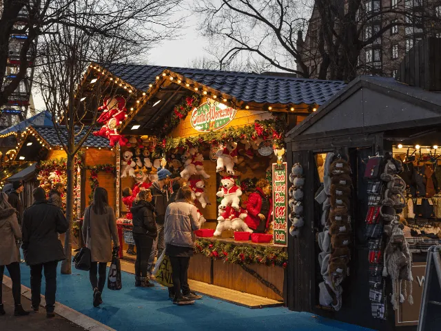
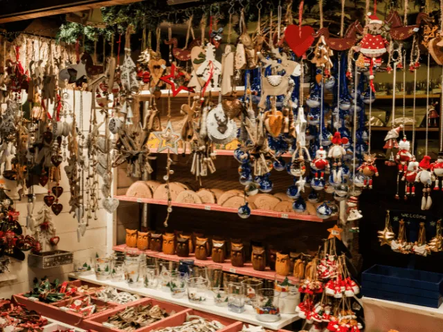

Kerstmarkten in Nijmegen 2026
Bijgewerkt op 22 oktober 2026. Een paar markten hebben hun datum voor 2026 nog niet bekendgemaakt. Die vullen we aan zodra we ze weten.
Zin in glühwein, lichtjes en een kraampje met dat ene cadeautje dat je nergens anders vindt? Dan zit je in december goed in Nijmegen. De binnenstad hangt vol lichtjes, in het Kronenburgerpark staat Winterburg en in de wijken zijn kleine, gezellige markten waar je de buren tegenkomt. En wil je er een dagje op uit, dan rij je in een half uur naar de kerstmarkt in Kleef. Hieronder zetten we alles voor je op een rij.

Winterburg in het Kronenburgerpark
Winterburg Nijmegen
- Kerstmarkt: 10 t/m 13 en 17 t/m 23 december 2026
- Festival t/m 27 december
- Kronenburgerpark, 5 minuten lopen van station Nijmegen
Winterburg is het winterfestival in het Kronenburgerpark, een van de mooiste plekjes van de stad. Tussen de oude bomen en de stadsmuur staan kramen van makers, kunstenaars en foodtrucks. De markt is open op donderdag en vrijdag van 16.00 tot 21.00 uur, op zaterdag van 11.00 tot 21.00 uur en op zondag van 11.00 tot 19.00 uur. Op 21, 22 en 23 december kun je terecht van 15.00 tot 21.00 uur. Dit zijn nog voorlopige tijden, dus kijk vlak voor je gaat even op winterburg.nl.
In de Spiegeltent zijn concerten, onder meer van Spinvis & Saartje (14 december), MICHA (15 december) en Zoë Livay (22 december). Daar heb je een kaartje voor nodig. Een ijsbaan zou de organisatie graag willen, maar die is nog niet zeker.
Nijmeegse Winterweken en de Route van het Licht
Van 12 december 2026 tot en met 3 januari 2027 zijn de Nijmeegse Winterweken. Geen kerstmarkt, wel drie weken lang licht en cultuur in de binnenstad, precies in de donkerste weken van het jaar. Je loopt de Route van het Licht langs lichtsculpturen en een lichtmuurschildering, en onderweg kom je koren, straattheater en de lichtjesoptocht tegen.
Vorige jaren stond er een doorloopkerstboom op de Grote Markt, kon je op de Ganzenheuvel Rudolfs rode neus laten stralen en stond er een grote doorloopster bij de ingang van het Valkhofpark. Dat laatste is echt een fijn fotomoment, met de Valkhofkapel op de achtergrond. De route voor 2026 wordt rond de start bekendgemaakt. Tip: loop hem als het net donker is en eindig met iets warms op het Kelfkensbos.
Kerstcircus Nijmegen
- 22 december 2026 t/m 3 januari 2027
- Goffertpark
Het Kerstcircus viert zijn vijftiende jaar met de voorstelling We Are the World, met internationale artiesten, humor en muziek. Leuk om met de kinderen of opa en oma te doen in de kerstvakantie. Kaartjes koop je vooraf bij de organisatie.
Kerstmarkten in de Nijmeegse wijken
De kleine markten in de wijken zijn misschien wel het leukst: een paar kraampjes, een vuurkorf, iemand die kerstliedjes speelt en buren die je al jaren niet gesproken had. De organisatoren maken hun datum vaak pas in november bekend. Staat er nog niets? Dan zie je hieronder wanneer ze vorig jaar waren, zodat je ongeveer weet wanneer je ze kunt verwachten.
Kerstmarkt in de binnentuin van Plan A
- Datum 2026 volgt
- Vorige editie: 13 en 14 december 2025, 14.00 tot 19.00 uur
- Vlietstraat 22
In de binnentuin van Plan A staan lokale ondernemers met kerstdecoratie, vintage kleding en handgemaakte sieraden. Je warmt je op bij het vuur met glühwein of warme chocomel. De toegang is gratis.
Kerstmarkt Hortus Nijmegen
- Datum 2026 volgt
- Vorige editie: zondag 14 december 2025, 11.30 tot 16.00 uur
- Tuin van de Toekomst, Victor Westhofflaan
Een kerstmarkt in de botanische tuin, met kraampjes van lokale makers, handgemaakte lekkernijen, muziek en vuurkorven. Fijn als je even rust zoekt na de drukte van de stad.
Kerstmarkt Café Frowijn
- Datum 2026 volgt
- Vorige editie: 14 en 15 december 2024
- Pontanusstraat 51
Café Frowijn in Nijmegen-Oost zet kraampjes neer met live muziek, vuurkorven en glühwein. Een goede plek voor een cadeautje en een praatje.
Kerstmarkt Malvert
- Datum 2026 volgt
- Vorige editie: zaterdag 21 december 2024
Bewoners en ondernemers uit Malvert staan in verlichte kraampjes met hun spullen. Er is live muziek, er is wat te doen voor de kinderen en er is genoeg te eten.
Kerstmarkt Huize Rosa
- Datum 2026 volgt
- Vorige editie: 12 december 2024
Zorgcentrum Huize Rosa opent de deuren voor een kleine kerstmarkt met handgemaakte kerstdecoratie, kerstmuziek en iets lekkers. Klein, maar met veel liefde gemaakt.
Kerstmarkt De Biezantijn
- Datum 2026 volgt
- Vorige editie: 8 december 2024
Rond wijkcentrum De Biezantijn staan kraampjes, met muziek en wat te drinken. Handig als je vroeg in december al cadeautjes wilt scoren.
Kerstmarkten voor het goede doel
Bij deze markten gaat de opbrengst naar een goed doel, dus je cadeautje doet meteen iets extra's. De kerstmarkt van De Vincentius Vereniging in Horstacker zet zich in tegen armoede en eenzaamheid. Er is live muziek en kinderen kunnen een ritje maken met de kerstman. Ook het Kolpinghuis geeft de opbrengst van zijn kerstmarkt aan een goed doel, met zang, kerstlekkers en een knutselhoek voor kinderen. De data voor 2026 volgen.

Wintermarkt en kerstfair
De makers van De Smeltkroes houden elk jaar een wintermarkt in hun ateliers. Je kijkt mee in de werkplaatsen, doet mee aan een workshop en gaat naar huis met een cadeau dat echt ergens gemaakt is. Rond De Witte Molen in het Florapark is ook een kerstmarkt, met muziek, kerststukjes maken en de kerstman. Die begint pas als het schemert, dus de lichtjes komen daar extra mooi uit. De data voor 2026 volgen.
Kerstmarkten in de regio
Even de stad uit? In de dorpen rond Nijmegen zijn in december veel markten, vaak in het weekend van 12 en 13 december.
Kerstmarkt Kasteel Doornenburg
- Zondag 13 december 2026
- Vorige editie: 11.00 tot 16.00 uur
Een kerstmarkt op de binnenplaats van een echt middeleeuws kasteel, in de Betuwe op zo'n twintig minuten rijden van Nijmegen. Dezelfde zondag is er ook een kerstmarkt in Gendt, dus je kunt ze makkelijk combineren. De gemeente Lingewaard heeft beide markten in haar agenda staan; de tijden voor 2026 volgen nog.
Winters Wijchen
- Verwacht: 12 en 13 december 2026
- Vorige editie: 13 december 2025 (17.00–21.00 uur) en 14 december 2025 (13.00–17.00 uur)
Het centrum van Wijchen wordt een winterfeest met lichtjes, muziek, optredens en kraampjes. Uitagenda's noemen 12 en 13 december 2026, maar de organisatie heeft dat zelf nog niet bevestigd.
Kerstmarkt Boscafé de Zweef (Malden)
- Datum 2026 volgt
- Vorige editie: 13 en 14 december 2025, 10.00 tot 17.00 uur
Boscafé de Zweef en de Nijmeegse Aeroclub zetten samen meer dan 40 kraampjes neer, met glühwein bij de vuurkorf en winterse gerechten. Voor de kinderen zijn er een speeltuin, een zweefmolen en schmink. De meeste kramen staan buiten onder tenten, dus trek warme sokken aan.
Zondagse Kerstmarkt Malden
- Datum 2026 volgt
- Vorige editie: zondag 15 december 2024
Het centrum van Malden staat vol kraampjes met kerstcadeaus, streekproducten en winterse lekkernijen.
Kerstmarkt Bemmel
- Datum 2026 volgt
- Vorige editie: 15 december 2024
Kraampjes in het centrum van Bemmel, met live muziek en iets warms te drinken.
Kerstmarkt Overasselt
- Datum 2026 volgt
- Vorige editie: 15 december 2024, 11.00 tot 16.00 uur
Bij Buurderij De Lage Hof vind je kraampjes met winterse producten, glühwein, oliebollen en erwtensoep. Kinderen roosteren marshmallows en binnen zingen koren uit de buurt.
Kerstweekend Galerie 1400 (Slijk-Ewijk)
- Datum 2026 volgt
- Vorige editie: 7 t/m 15 december 2024
Kunstenaars laten hun werk zien en verkopen het ook, met muziek en een warme sfeer. Een mooie plek voor een cadeau met een verhaal.
Dickensfestijn Druten
- Datum 2026 volgt
- Vorige editie: 14 december 2025
Het centrum van Druten gaat terug naar de tijd van Charles Dickens, met figuranten in kostuum, kraampjes en muziek.
Over de grens: Kleef en Goch
De Duitse kerstmarkten beginnen eerder dan de Nederlandse en zijn vaak al voorbij voordat de markten hier openen. Wil je ze meepakken, ga dan eind november of in het eerste weekend van december.
Klever Weihnachtsmarkt (Kleef)
- 27 november t/m 6 december 2026
- Rond het stadhuis en het Museum B.C. Koekkoek-Haus
- Ongeveer een half uur rijden
Kleef is voor veel Nijmegenaren dé kerstmarkt over de grens, en dit jaar is het alweer de 51e editie. Je loopt van kraam naar kraam rond de Pastor-Leinung-Platz en de Koekkoek-Platz, met gebrande amandelen, Glühwein en handgemaakte spullen. De markt is open van maandag tot en met vrijdag van 14.00 tot 21.00 uur en in het weekend van 12.00 tot 21.00 uur. Op de laatste zondag sluit hij om 20.00 uur. Op vrijdag 4 december om 18.00 uur komt Sankt Nikolaus langs met Weckmänner voor de kinderen. Alles over openingstijden, parkeren en de bus lees je in Kerstmarkt Kleve 2026. Meer op kleverweihnachtsmarkt.de.
Klever Winterzauber
- Zondag 29 november 2026, 13.00 tot 18.00 uur
- Binnenstad Kleef, koopzondag
Op de eerste adventszondag is er in Kleef een stadsfeest en zijn de winkels open. Combineer het met de kerstmarkt en je hebt een complete dag uit. Bekijk het in onze agenda.
Kerstmarkt Kloster Graefenthal (Goch)
- 27 t/m 29 november en 4 t/m 6 december 2026
- Maasstraße 48, Goch
- Toegang € 6,50 in de voorverkoop, € 7,50 aan de kassa, tot 16 jaar gratis
Een kerstmarkt in een oud klooster, met houten chalets op het terrein en brocante en delicatessen in de kloostergang. Er zijn koren, muzikanten in Dickens-kostuums, vuurshows, roofvogels en een demonstratie met husky's. Open op vrijdag van 16.00 tot 21.00 uur, op zaterdag van 14.00 tot 21.00 uur en op zondag van 11.00 tot 19.00 uur. Parkeren is gratis. Kaartjes en info op kloster-graefenthal.de en in onze agenda.
Zin om van Kleef een heel dagje te maken? Lees dan ook 7x Kleef net over de grens bij Nijmegen.
Tips voor je bezoek
- Kom op de fiets of met de trein. Winterburg ligt op vijf minuten lopen van het station, en in de binnenstad is parkeren in december druk en duur. Ga je toch met de auto, lees dan eerst onze tips over parkeren in Nijmegen.
- Kijk vlak voor je gaat nog even op de site van de markt. Tijden kunnen nog veranderen, en bij storm of zware regen gaat een buitenmarkt soms dicht.
- Doordeweeks is het rustiger. Bij Winterburg en in Kleef loop je op een donderdagavond een stuk makkelijker dan op zaterdag.
- Kleed je warm aan. Je staat al snel een paar uur buiten, en warme handen maken die glühwein nog lekkerder.
Meer te doen in december
Zoek je meer te doen rond kerst en oud en nieuw? In onze agenda vind je alle evenementen in Nijmegen en omgeving.
Zelf op de kerstmarkt staan?
Wil je zelf achter een kraam staan op een kerstmarkt in Nijmegen? Dan heb je een winterstandplaatsvergunning nodig. Hoe dat werkt, lees je op de pagina van de gemeente Nijmegen. Voor Winterburg kun je een kerstkraam huren via winterburg.nl. Organiseer je zelf een kerstmarkt? Zet hem gratis in onze agenda, dan nemen we hem ook mee op deze pagina.
Veelgestelde vragen
Wanneer is de kerstmarkt in Nijmegen in 2026?
De grootste kerstmarkt is die van Winterburg in het Kronenburgerpark, op 10 t/m 13 en 17 t/m 23 december 2026. De kleinere markten in de wijken en de dorpen rond Nijmegen zijn meestal in het tweede of derde weekend van december.
Wat zijn de openingstijden van de kerstmarkt bij Winterburg?
Op donderdag en vrijdag van 16.00 tot 21.00 uur, op zaterdag van 11.00 tot 21.00 uur en op zondag van 11.00 tot 19.00 uur. Op 21, 22 en 23 december van 15.00 tot 21.00 uur. Dit zijn voorlopige tijden, dus kijk vlak voor je gaat even op winterburg.nl.
Moet je betalen voor een kerstmarkt in Nijmegen?
Nee, de kerstmarkten in Nijmegen zijn gratis te bezoeken. Voor de concerten in de Spiegeltent van Winterburg heb je wel een kaartje nodig. Bij Kloster Graefenthal in Goch betaal je entree: € 6,50 in de voorverkoop en € 7,50 aan de kassa, tot 16 jaar gratis.
Is er een ijsbaan in Nijmegen in december 2026?
Dat is nog niet zeker. De organisatie van Winterburg zou graag een ijsbaan in het Kronenburgerpark neerzetten, maar dat hangt af van sponsoring.
Wanneer is de kerstmarkt in Kleef in 2026?
De Klever Weihnachtsmarkt is van 27 november t/m 6 december 2026, rond het stadhuis en het Museum B.C. Koekkoek-Haus. Doordeweeks is hij open van 14.00 tot 21.00 uur en in het weekend van 12.00 tot 21.00 uur. Op de laatste zondag sluit hij om 20.00 uur.
Wanneer zijn de Nijmeegse Winterweken 2026?
Van 12 december 2026 t/m 3 januari 2027. In die weken loop je de Route van het Licht door de binnenstad, en zijn er koren, straattheater en een lichtjesoptocht.
Hoe kom je het makkelijkst naar Winterburg?
Met de trein of de fiets. Het Kronenburgerpark ligt op vijf minuten lopen van station Nijmegen. In december is parkeren in de binnenstad druk en duur.